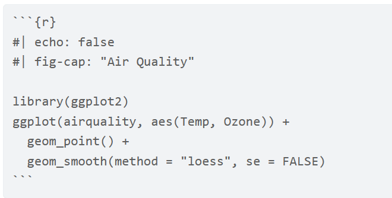

Quarto Basics
What do we want to be able to do?
Data Science!
- Read in raw data and manipulate it
- Combine data sources
- Summarize data to glean insights
- Apply common analysis methods
- Communicate Effectively
This entire process must be reproducible! Git and GitHub certainly help but we also need to make sure that we document our thoughts and process as we work through cleaning our data, summarizing it, and fitting our models.
There are two major tools to enhance how we program that work very well with RStudio:
RMarkdown:- Allows for writing of thought processes, code, and interpretations
- Easy to create many types of final documents: HTML pages, PDFs, slideshows, and more!
- Created via a
.Rmd(Rmarkdown file)
Quarto: Next generation version of
RMarkdown!- Built to use multiple programming languages (
R,python, andJulia) easily - Works with
JupyterNotebook format as well - Created via a
.qmd(Quarto markdown file) - Renders most
.Rmdfiles as is!
- Built to use multiple programming languages (
We’ll go through the basics to get you started. Much more is available on the Quarto docs page, the RStudio Quarto integration page, and in the R for Data Science book.
Markdown Idea
Markdown is a simpler version of a markup language. HTML is the most commonly known markup language (HTML = Hypertext markup language). With HTML you use tags to specify things that a web browser like chrome interprets. For instance,
<h1>My first level header</h1>
<a href = "https://www.google.com">Link to a search engine.</a>
is HTML interpreted by your browser to be a header and a link. Markdown is a simpler version of this. There are many markdown languages (including Quarto markdown, R markdown, and GitHub markdown) but most have the same base structure. An equivalent way to write the above using markdown would be
# My first level header
[Link to a search engine.](https://www.google.com)
Where R markdown and Quarto go beyond is in the ability to weave R code into the equation!
- You can include code chunks in your
.Rmdor.qmdfile. - You then render the document through
RStudio(or the command line). - The
Rcode runs and output can be included in the final document! - It is very awesome.
Quarto is designed to be used in three ways (R for Data Science)
- To communicate to decision makers (focus on conclusions not code)
- To collaborate with other data scientists (including future you!)
- As environment to do data science (documents what you did and what you were thinking)
Documenting with Markdown via Quarto
It is easy to create many types of documents in Quarto! Go to file –> New File –> Quarto Document
Create a new Quarto document by selecting HTML (as that is the easiest to render - aka build the output). Save the template file that is produced (this will be a .qmd file).
.qmd files contain three important types of content:
(An optional) YAML header surrounded by
---s- Defines meta data about the document
Chunks of
Rcode- Code that may evaluate and produce output when knitting or rendering the document
Text mixed with simple text formatting instructions (Markdown syntax)
There is a visual editor in RStudio (similar to a word processing program) and a source editor. I’d recommend starting with the visual editor and trying to move to the source quickly. You’ll be way more efficient using the source editor!
YAML Header
YAML stands for “Yet Another Markup Language” or “YAML ain’t markup language”. This defines settings for the creation process (when you go to render the document).
As we used an HTML for our document, you should see something similar to this in the top part of your document:
---
title: "Untitled"
format: html
editor: visual
---If you render the document (which I’ll likely call Knitting as that is what it was called with R Markdown), it obeys these instructions for what to create.
Try to render the document and see if you can get the HTML output.
- Do this via the “Render” button or by using hot keys: CTRL/CMD + Shift + k
Markdown Syntax
In the template document created you’ll also see some text. Some of it is larger, some of it links, some of it plain text. If you click on the “Source” you’ll see the markdown syntax that you can use to spice up your outputted document:
The syntax is really easy to pick up. Below you’ll find some commonly used markdown syntax:
#RMarkdown\(\rightarrow\) First level header## Next\(\rightarrow\) Second level header**Knit**or__Knit__\(\rightarrow\) Bold font (Knit)*italic*or_italic_\(\rightarrow\) Italic font (italic)*__both__*\(\rightarrow\) Bold and italic (both)<https://rstudio.github.io/cheatsheets/Quarto.pdf>\(\rightarrow\) A hyperlink: https://rstudio.github.io/cheatsheets/Quarto.pdf[Cheat Sheet link](https://rstudio.github.io/cheatsheets/Quarto.pdf)\(\rightarrow\) Cheat Sheet link
Check this site for markdown basics.
Note: By using headers you can easily create a table of contents - which is very useful for accessibility of documents.
Code Chunks
The real power of Quarto and R markdown is the ability to run R code when rendering and having the output show in the final document. This saves so much time and makes updating reports/documents a breeze!
A code chunk looks like the following:

- Start a code chunk by typing out the syntax or with the shortcut ‘CTRL/CMD + Alt/Option + I’
When rendering:
- Chunks run sequentially in the document
- Chunks share objects. Essentially an
Renvironment is created when rendering a document and all objects created in chunks are stored in it. - You can specify behavior of each code chunk (show
Rcode or hide it, evaluate or don’t evaluate) and set global chunk behavior
To change the behavior of code chunks, we use chunk options:
- Hide/show code with
echo = FALSE/TRUE
- Choose if code is evaluated with
eval = TRUE/FALSE
- Have code evaluate, not show, and show no output with
include = TRUE/FALSE - Turn on/off displaying of messages or warnings with
message = TRUE/FALSEandwarning = TRUE/FALSE
Specifying these options in the top part of the code chunk is the R Markdown way of doing things (which is still acceptable in a .qmd file):

However, the new, better, way of doing it is via special comments (similar to building an R package or your own API).
One important difference between
RMarkdown documents and Quarto documents is that in Quarto chunk options are typically included in special comments at the top of code chunks rather than within the line that begins the chunk. For example:
With Quarto, if you want to specify global chunk options the best way to do so is in the YAML header. Be very careful about spacing in YAML headers! You don’t want extra spaces anywhere and you need to have the correct indenting!
Here is an example that would make all code chunks be ‘collapsed’ by default.
---
title: "My Document"
format: html
knitr:
opts_chunk:
collapse: true
---You can also (still) set code chunk options in a setup code chunk. This is just a code chunk you put at the beginning of the document that sets options for you. Something like the following in a code chunk:
#| include: false
knitr::opts_chunk$set(echo = FALSE, eval = TRUE, warning = FALSE)
The include: false tells knitr not to include the code or output of this chunk in the final document.
Please pop this video out and watch it in the full panopto player!
Use the table of contents on the left or the arrows at the bottom of this page to navigate to the next learning material!